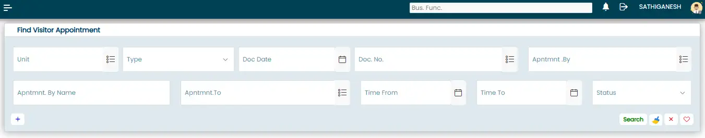
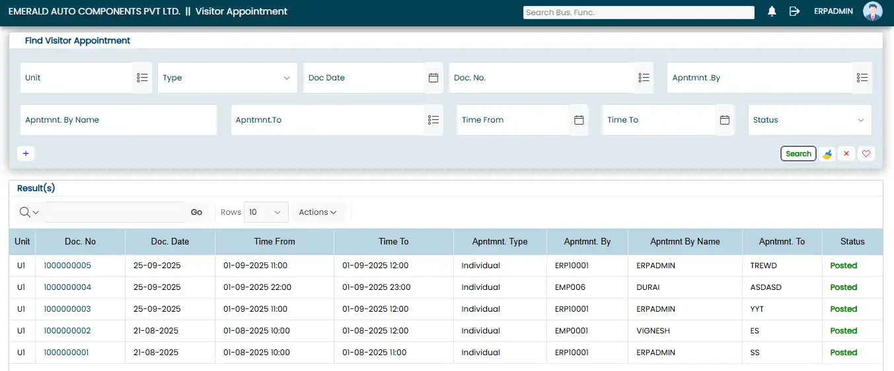
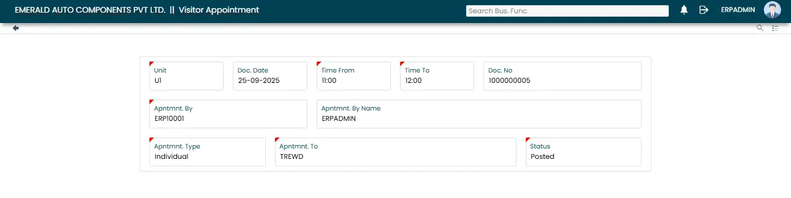
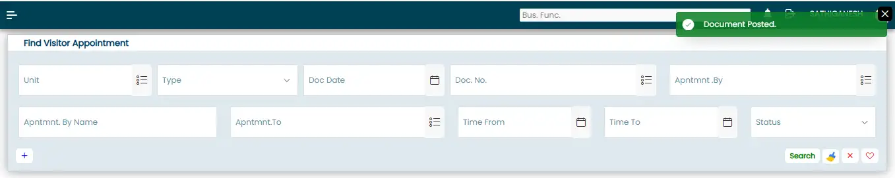

<div data-category="Gate Entry" data-title="Visitor Appointment" data-updated="January 23, 2026" data-contributors="RoadmapIT" data-breadcrumb="Home,Gate Entry,Visitor Appointment">
  <div class="page-content">
    <h5>Visitor Appointment</h5>
    <p>Managing visitor appointments in gate entry involves scheduling and tracking visitors' details to ensure a smooth and secure process.</p>

    <h5>Navigation path:</h5>
    <p class="fs-6">Supply Chain Management \ Gate Entry \ Transaction \ Visitor Appointment</p>

    
    <ul style="list-style-type: none; align-content: center">
      <li class="mouse-icon">Search screen displays the list of Visitor Appointment with the relevant details and its status</li>
      <li class="mouse-icon">Click on Search to filter all the records.</li>
    </ul>

    
    <ul style="list-style-type: none; align-content: center">
      <li class="mouse-icon">User can filter the respective documents by entering the search parameters at the header.</li>
      <li class="mouse-icon">Using Search, system displays the results relevant to the search parameters entered.</li>
      <li class="mouse-icon">On-click; the corresponding transaction record will be displayed.</li>
      <li class="mouse-icon">
        Using
        
        icon, entered search parameters can be cleared.
      </li>
      <li class="mouse-icon">
        To close the screen, use
        <i class="bi bi-x fs-4 mx-2 text-danger"></i>
        icon.
      </li>
      <li class="mouse-icon">
        By Clicking the
        <i class="bi bi-plus fs-4 mx-2 text-primary"></i>
        Add button in the find screen, we can create a new visitor appointment document
      </li>
    </ul>

    
    <ul style="list-style-type: none; align-content: center">
      <li class="mouse-icon">Select the Unit</li>
      <li class="mouse-icon">Enter Time from and Time To</li>
      <li class="mouse-icon">Select Appointment By</li>
      <li class="mouse-icon">Select Appointment Type</li>
      <li class="mouse-icon">Enter Appointment. To.</li>
      <li class="mouse-icon">Click <i class="bi bi-check-lg fs-4 mx-1 text-success"></i> to Save.</li>
      <li class="mouse-icon">Click on Post button and the document will be posted</li>
    </ul>

    
  </div>
</div>
